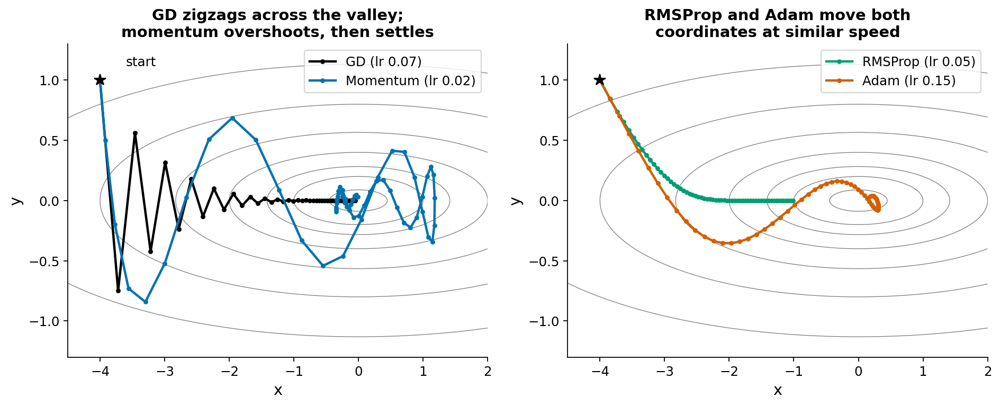
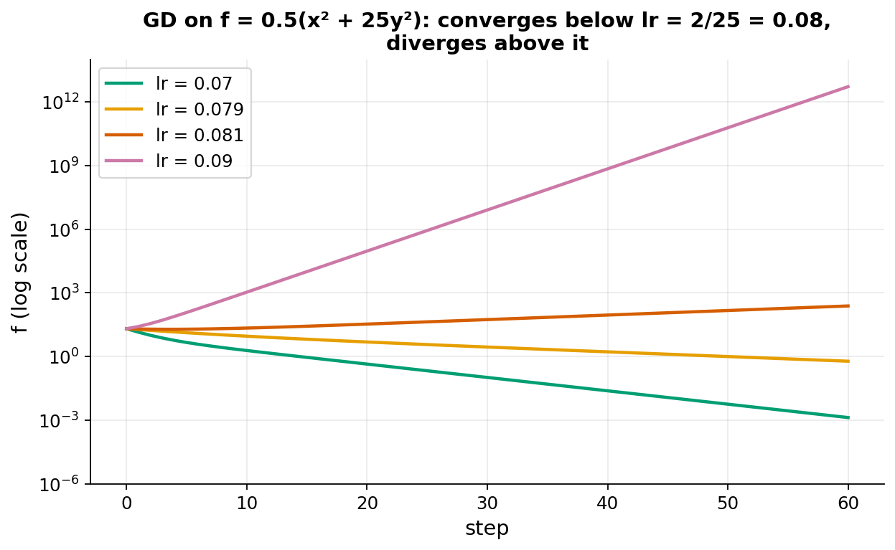
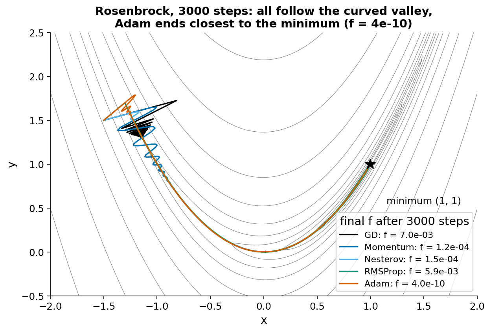
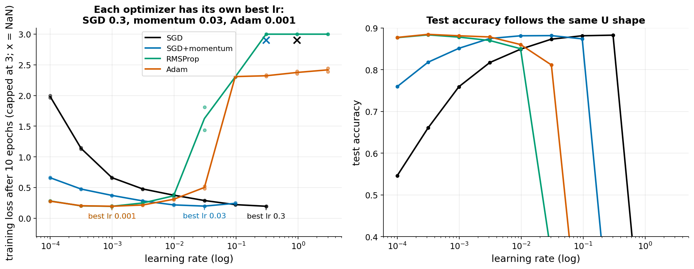
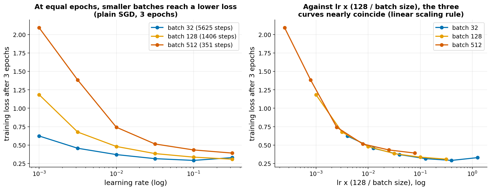

Optimizer race
The idea
Training minimises a loss by repeated small steps. The step depends on the gradient g (the slope of the loss) and the learning rate lr. This is textbook material: Goodfellow et al., chapter 8, section 8.3 (basic algorithms: SGD, momentum, Nesterov momentum) and section 8.5 (adaptive learning rates: RMSProp, Adam). Section 8.2 covers ill-conditioning.
- Gradient descent (GD / SGD): move against the gradient,
w = w - lr * g. SGD meansgis computed on a minibatch. - Momentum: keep a running velocity
v = 0.9 * v - lr * gand move byv. Steps in a consistent direction add up; steps that flip sign cancel. - Nesterov momentum: as momentum, but the gradient is taken at the point the velocity is about to reach, not at the current point.
- RMSProp: keep a running average of the squared gradient, coordinate by coordinate, and divide each gradient coordinate by the square root of that average. Each parameter gets its own step size.
- Adam: momentum (running average of
g) combined with RMSProp-style scaling, plus a correction for the first steps.
Why plain GD is slow: the curvature of the loss can differ a lot between directions. The ratio of the largest to the smallest curvature is the condition number. On f = 0.5(x2 + 25y2) the curvatures are 1 and 25. GD is stable only if lr < 2 / 25 = 0.08 (2 divided by the largest curvature). Near that limit it bounces across the steep direction y while creeping along the flat direction x. Momentum averages out the bounces and speeds up the flat direction, but can overshoot. RMSProp and Adam rescale each coordinate, which removes much of the difference in curvature between axes. This works here because the steep and flat directions are the x and y axes. If the valley were rotated 45 degrees, per-coordinate scaling would not help much.
References: Goodfellow, Bengio, Courville, Deep Learning, ch. 8; Kingma and Ba, Adam (arXiv 1412.6980).
What students would do
- Warm-up (about 10 minutes, no training). Run five optimizers for the same number of steps on the quadratic above and on Rosenbrock (a curved narrow valley) and plot the paths. Then raise the GD learning rate past 0.08 and watch it diverge.
- Build the classifier (about 10 minutes). A 784-256-256-10 ReLU network on FashionMNIST, minibatch 128, fixed budget of 10 epochs.
- Class experiment (about 20 minutes). The shared grid is 4 optimizers (SGD, SGD+momentum 0.9, RMSProp, Adam) x 10 learning rates (log spaced, 1e-4 to 3) x 2 seeds = 80 cells. With under 30 students, each runs about 3 cells assigned by student number. Each sends (optimizer, lr, seed, final training loss, test accuracy) to the server. The only knobs a student changes are the optimizer and the learning rate.
- Live class plot. Final training loss against learning rate (log axis), one curve per optimizer; a second panel with test accuracy. The curves fill in as results arrive.
Discussion questions:
- Why does each curve rise on the right? What happens to the loss there (NaN for SGD, stuck at 2.3 for Adam)?
- Why is SGD's best learning rate about 300 times larger than Adam's?
- Momentum 0.9 moved the best learning rate down by 10. What is the effective step size of momentum in a flat region?
- All optimizers reach nearly the same best loss. Then why do people prefer Adam?
What our prototype found





| Optimizer | Best lr on grid | Train loss | Test acc. | Failure at higher lr |
|---|---|---|---|---|
| SGD | 0.30 | 0.196 | 0.883 | NaN at 0.95 |
| SGD+momentum 0.9 | 0.031 | 0.198 | 0.882 | NaN at 0.30 |
| RMSProp | 0.001 | 0.195 | 0.878 | loss 1.4 to 1.8 at 0.03; stuck near 2.3 at 0.097 |
| Adam | 0.001 | 0.196 | 0.881 | stuck at 2.31 (accuracy 0.10) at 0.097 |
Predictions that held: divergence above a threshold; Adam best near 1e-3; momentum moves the best lr down by 10x (0.3 to 0.03). Predictions that did not hold cleanly: SGD has no U at all, because its loss keeps falling up to the last stable lr (0.3) and then jumps to NaN (the grid step is a factor 3.1); momentum rises for only one grid step (0.198 at lr 0.03, 0.24 at lr 0.1) before NaN; Adam does not produce NaN but gets stuck at chance level; best loss is the same for all optimizers at 10 epochs, so Adam's advantage here is robustness at small lr (loss 0.28 at lr 1e-4, against 1.98 for SGD).